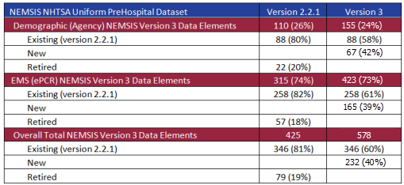
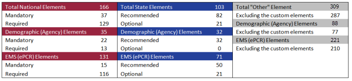

This data dictionary represents 24 months of effort collaborating with the EMS industry through web-based reviews, public comment periods, focus groups, industry dialogue, topic focused projects, and consensus. The National EMS Information System Version 3 represents a revision from the existing version 2.1.1 released in 2005. Adopting a broad perspective, the initiative to move to a 3rd version of the NEMSIS data dictionary was fueled by the need to improve data quality, enhance our ability to assess EMS performance, augment the flexibility of the standard for state adoption and, prepare for our initial movement of this standard into Health Level 7 (HL7) for approval as an American National Standards Institute (ANSI) standard. At the time of this initial publication, NEMSIS Version 3 has passed several ballots within HL7 in an effort to be recognized as a federal healthcare information standard. Final HL7 adoption of NEMSIS Version 3 is expected in 2012. HL7 will be the permanent home for the NEMSIS standard once fully adopted and future revisions will occur through the HL7 process.
NEMSIS Version 3 Element Configuration from v2.2.1

NEMSIS Version 3 Element Configuration
Total Elements including the Custom Elements: 578
Excluding the Demographic and EMS (ePCR) Custom Elements: 556

NEMSIS Version 3.4.0 Data Dictionary Content
**Note: The numbers to the right of the content listed below represent the location for each element on the Sample Page of the Data Dictionary (page vi).
- Data Element Number (#1)
- The NEMSIS Version 3 element numbering system has been revised to improve the information that can be derived from just the data element number. An example of a data element number is dAgency.01.
- The data element number begins with either a "d" representing the demographic (agency) section or an "e" representing the EMS PCR section.
- A one word descriptor for each section is now included in the data element number.
- A period separates the section (e.g. dAgency) from the data element number (e.g. 01).
- Data Element Name (#3)
- The name for the data element.
- National and State Element Indicator (#2, #5, #6)
- National = Yes, is an indication that the data element is required to be collected:
- at the local EMS agency level and submitted to the state
- State = Yes, is an indication that the data element is recommended to be collected at the "State" level.
- Data Element Definition (#4)
- The definition for the data element.
- Version 2 Number (#7)
- The NEMSIS Version 2.2.1 Data Element Number.
- If the Data Element is new to Version 3.4.0, the Version 2 Number will be blank.
- Data Structure Information
- Recurrence (#12)
- Indication that the data element can have more than one value.
- Represented by two characters separated by a colon. The configuration includes:
- 0:1 = element is not required and can occur only once
- 0:M = element is not required and can repeat multiple times
- 1:1 = element is required and can occur only once
- 1:M = element is required and can repeat multiple times
- Usage (#8)
- Indication of when the data element is expected to be collected.
- Mandatory = Must be completed and does not allow for NOT values
- Required = Must be completed and allows NOT values
- Recommended = Does not need to be completed and allows NOT values
- Optional = Does not need to be completed and does not allow for NOT values
- NOT Value Characteristics (#10)
- Indication that the data element can have NOT values.
- NOT Values are used (where permitted) to document that a data element was not applicable to the EMS response / request for service, was not or could not be completed.
- NOT Values are documented as "an attribute" of an element. It allows the documentation of NOT value when a "real" value is not documented. (Please reference the NEMSIS White Paper describing the use of NOT Values, Pertinent Negatives, and Nill.)
- NOT Values Accepted (#14)
- Indication of which of the following three NOT values is acceptable.
- Not all data elements accept NOT values.
- NOT Values have been condensed in Version 3.
- Not Applicable = The data element is not applicable or pertinent to the EMS event.
- Not Recorded = If a data element was unintentionally left blank the EMS software should auto-populate it with "Not Recorded".
- Not Reporting = The data element is not collected by the EMS agency or state. This NOT value does not apply to National elements where "Usage = Required".
- Pertinent Negative Values (PN) (#9, #14)
- A list of Pertinent Negative Values which can be associated with a data element.
- Not all data elements accept Pertinent Negative Values.
- Pertinent Negative Values are documented as "an attribute" of an element. It allows the documentation of pertinent negative value in addition to the documentation of a "real" value. (Please reference the NEMSIS White Paper describing the use of NOT Values, Pertinent Negatives, and Nill.)
- Example of use:
- Example #1 - Aspirin Administration:
- If the medication Aspirin is part of the agency protocol for Chest Pain but was not administered by the responding crew, the reason why should be documented. This is done through the use of Pertinent Negative Values. If the patient took the Aspirin prior to the EMS arrival on scene, the value "Medication Already Taken" should be documented in addition to "Aspirin".
- Example #2 - Gunshot Wound Entry & Exit Assessment
- If the patient was injured by a gunshot the assessment should document not only the entry but the exit of the bullet. In the abdominal assessment if "Gunshot Wound-Entry" was documented in the Right Upper Quadrant the EMS professional should be looking for an exit wound. If upon assessment of the back/spine no "Gunshot Wound-Exit" was identified then both "Gunshot Wound-Exit" and the pertinent negative value of "Exam Finding Not Present" should be documented.
- Is Nillable (#11)
- Indication that the element can accept a "blank" value.
- If the element is left "blank" the software must submit an appropriate value of one of the two attributes: Pertinent Negative or NOT Values.
- Associated Performance Measure Initiatives (#13)
- Indication that the data element has value in describing, defining, or measuring EMS from a performance perspective. Performance Measures can be associated with EMS service delivery, patient care, or both. The following service delivery or time dependent illness/injury performance measure topics have been included in NEMSIS Version 3:
- Airway - Airway Management
- Cardiac Arrest - Out of Hospital Cardiac Arrest
- Pediatric - Acute Pediatric Care
- Response - EMS Response Time
- STEMI - ST Elevation Myocardial Infarction (STEMI)
- Stroke - Acute Stroke Care
- Trauma - Acute Injury/Trauma Care
- Attributes (#14)
- An attribute provides extra information within an element. For information related to the first three attributes please see the NEMSIS document 'How to Utilize NEMSIS V3 "NOT values/pertinent negatives/nillable"'. The following are possible attributes:
- PN (Pertinent Negative)
- 8801001 - Contraindication Noted
- 8801003 - Denied By Order
- 8801005 - Exam Finding Not Present
- 8801007 - Medication Allergy
- 8801009 - Medication Already Taken
- 8801013 - No Known Drug Allergies
- 8801015 - None Reported
- 8801017 - Not Performed by EMS
- 8801019 - Refused
- 8801021 - Unresponsive
- 8801023 - Unable to Complete
- NV (Not Value)
- 7701001 - Not Applicable
- 7701003 - Not Recorded
- 7701005 - Not Reporting
- Nillable xsi:nil="true"
- Code Type
- 9924001 - ICD10
- 9924003 - RxNorm
- CorrelationID
- Date Type = String
- minLength = 0
- maxLength = 255
- DistanceUnit
- 9921001 - Kilometers
- 9921003 - Miles
- EmailAddressType
- 9904001 - Personal
- 9904003 - Work
- nemsisCode
- nemsisElement
- nemsisValueDescription
- PhoneNumberType
- 9913001 - Fax
- 9913003 - Home
- 9913005 - Mobile
- 9913007 - Pager
- 9913009 - Work
- ProcedureGroupCorrelationID
- Date Type = CorrelationID
- StreetAddress2
- Date Type = String
- minLength = 1
- maxLength = 55
- TIMESTAMP
- Date Type = DateTime
- minValue = 1950-01-01T00:00:00-00:00
- maxValue = 2050-01-01T00:00:00-00:00
- VelocityUnit
- 9921001 - Kilometers
- 9921003 - Miles
- Code List (#16)
- A list of values associated with the data element. Not all data elements have predefined value sets.
- Codes for each value:
- The codes are based on a 7-digit number, in a 2-2-3 pattern (without dashes).
- The first set of two numbers represent the data section
- The second set of two numbers represent the element number
- The last set is a 3-digit number for each value beginning at 001; The codes increase in increments of two (2).
- Codes are typically sequential (by two) and alphabetical. Some ordering is provided in an effort to present information based on workflow.
- Several values and codes reference external standards such as ICD-10, RxNorm, SNOMED, etc. NEMSIS will assist in providing a recommended list of EMS specific values and codes from these larger standards for most elements using these external standards.
- Data Element Editorial Comments (#17)
- Comments are provided to describe additions, changes, clarifications, or provide additional insight into the data element.
- Version 3 Changes Implemented (#18)
- Comments providing insight into specific Version 3 changes such as new or revised data elements.
- Element Deprecated(#19)
- Elements that are signified as "deprecated" will be removed from a future version of the NEMSIS standard. Their use should now be avoided, but will be supported until they are removed from the standard.
NEMSIS Version 3.4.0 Change Summary
- NEMSIS Version 3 includes several new types of information to better describe EMS from an industry, workforce, EMS service delivery, and patient care perspective. Examples of new Version 3 content include:
Demographic (Agency) Content
- EMS Agencies can list more than one state in which they offer EMS service delivery.
- EMS Agencies can indicate multiple Agency numbers.
- Multiple EMS Agency contacts can now be managed within the Demographic Section.
- EMS Agency Location and GIS information has been enhanced.
- EMS Professional and Workforce information has been enhanced.
EMS (PCR) Content
- EMS Crew level information has been enhanced
- Scene location information has been enhanced to improve geo-coding and location analysis.
- Provider Impression (diagnosis), Symptoms, Cause of Injury, Medical/Surgical History, and Incident Location are now based on ICD-10.
- Procedures are now based on SNOMED.
- Medications are now stored using the RxNorm standard
- Cardiac Arrest information has been enhanced to add focus on CPR and post arrest cooling.
- Automated Collision Notification information has been included.
- The data elements required to document and evaluate the CDC Field Triage Algorithm for trauma have been included.
- Vital Sign and patient monitoring information have been enhanced
- A new section for Laboratory and Diagnostic Imaging results has been added.
- The Exam section has been reconfigured to improve documentation and ease of use.
- Much of the medical device information has been mapped into the vital sign section for direct import via the XML standard.
- Inclusion of electronic signatures and external electronic documents.
- An Airway section has been added to better document and evaluate airway management.
- Improved Work Related Illness and Injury documentation capability.
- Disposition information has been enhanced especially associated with Specialty Centers and time dependent illness/injury Systems of Care.
- EMS Response and Transport Modes have been enhanced to better define emergent, non-emergent, scheduled, and non-scheduled variation.
- EMS Response and Transport Mode Descriptors have been added to allow for documentation of Lights and Sirens Use and Intersection Navigation tools.
- The Payment/Billing section has been greatly expanded to meet current electronic billing requirements.
- Outcome information has been expanded to include additional Emergency Department and Hospital Outcome information (often obtained through linkage).
General Improvements
- Version 3 content has focused on objective performance measures to better describe and evaluate EMS service delivery and patient care.
- State level configuration and customized data elements have been enhanced without changing the NEMSIS Version 3 Standard.